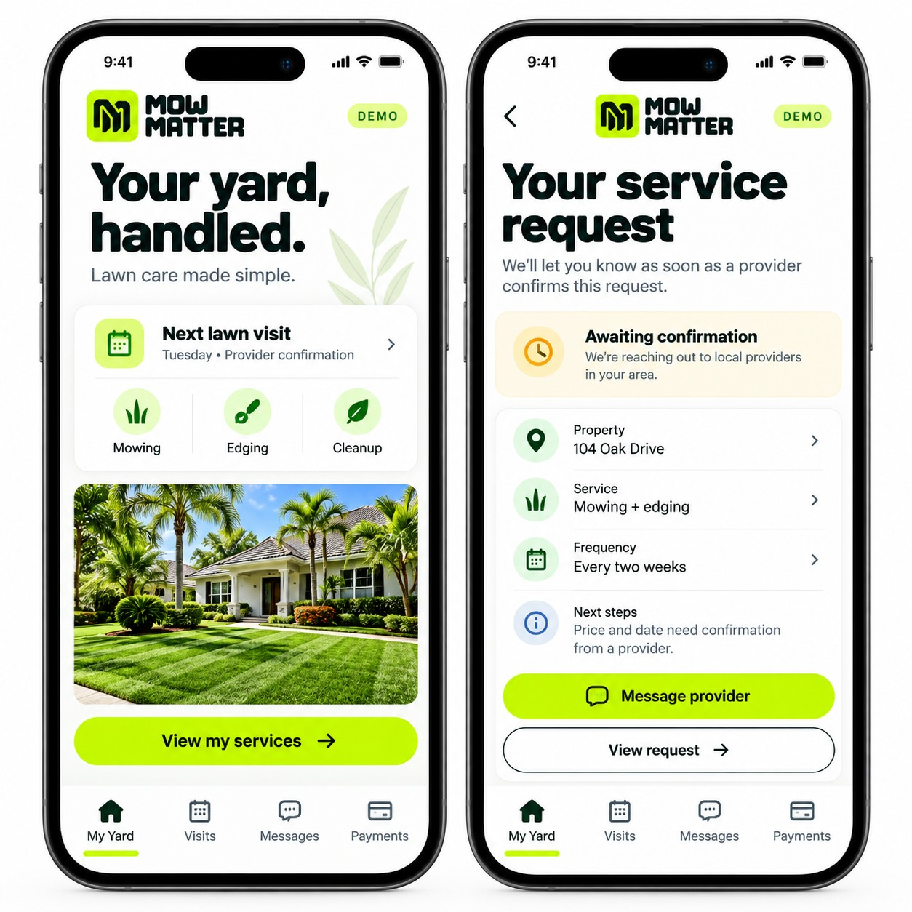

FOR HOMEOWNERS
Your yard, handled.
Without the guesswork.
Request the care you need today. Preview a simpler place to manage your visits, messages and service history as your provider joins the platform.
Start with what
your yard needs.
Mowing, edging, hedge trimming, leaf removal, mulch or a seasonal cleanup.
Coming to your yard portal
Confirmed visits, service photos, provider messages and invoices in one customer workspace.
Customer login, online payments and confirmed scheduling are in development. You can submit a service inquiry now.

A better yard starts with a simple request.
Request lawn careAlready have a lawn company?
Sign in to see reviewed yard insights and optional care from your provider.
Open your Yard Insights